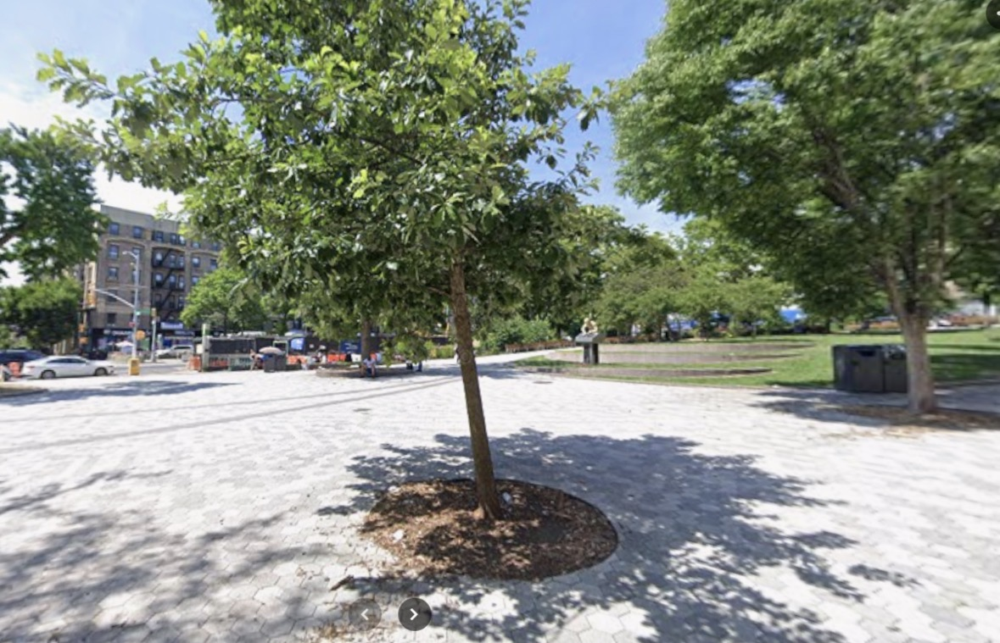

Reimagining Harlem Plaza
This project focuses on analyzing an existing Harlem plaza and reimagining it as a more functional and inviting environment. By incorporating greenery, seating areas, and improved layouts, the redesign aims to create a space that encourages people to gather, relax, and interact.

More Greenery
Adding plants, trees, and flowers to improve the environment.
Decoration
Better visual design through color, layout, and features.
Seating
More areas for people to sit, relax, and gather.
Comfort
Shade and layout improvements make the plaza more usable.

Before
The current plaza has potential but lacks visual richness.

After
The redesign adds greenery, decoration, and improved experience.